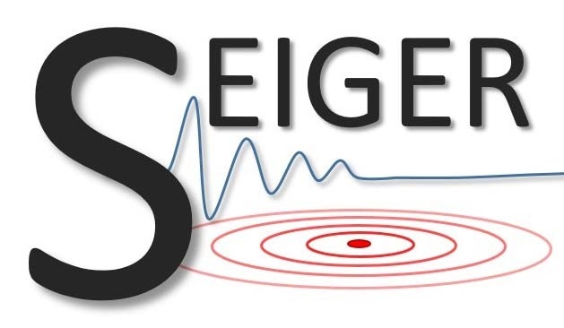
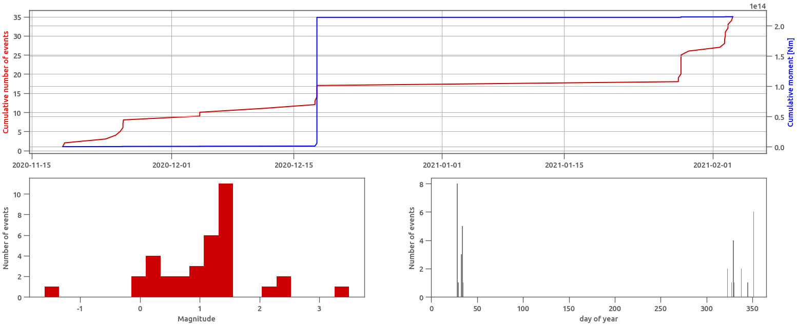
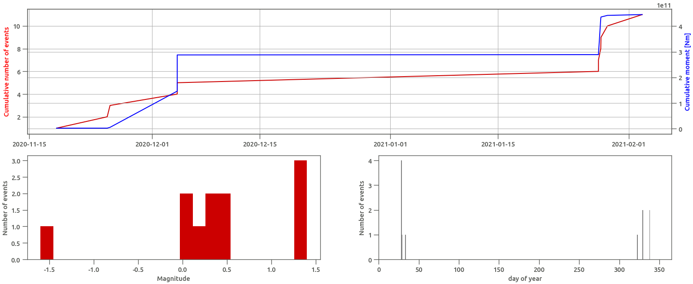
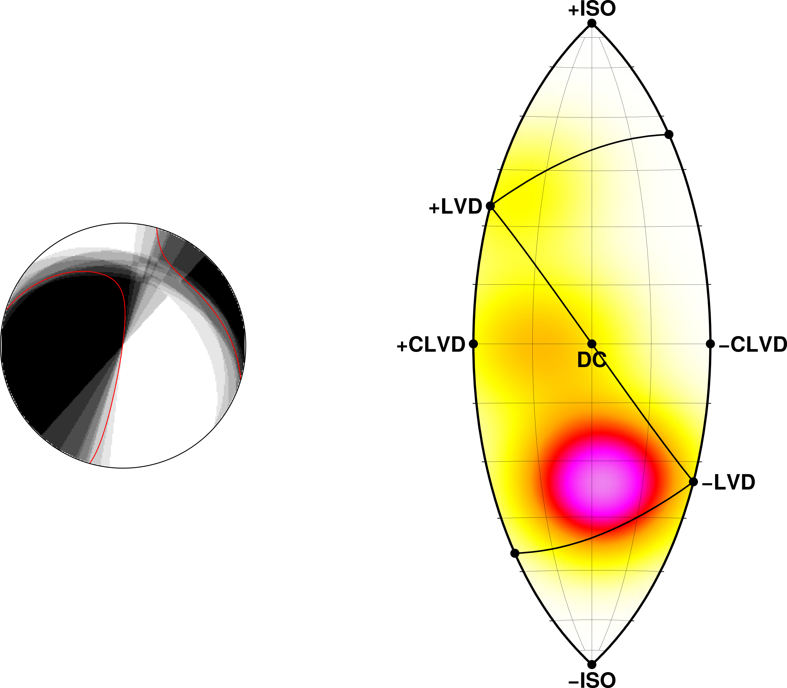

Seiger Workshop 2021
Detector update and Moment Tensor ML
Andreas Steinberg and Peter Gaebler

Improved correlation detector
Improved legacy (MAGS) detector
- old master events kept
- 21 new master events (2015+)
- 29 total master events
- 3 master Strasburg events
36 detections since station deployment
11 in Landau and Insheim
Estimation of moment tensors with machine learning
Variational inference (Bayesian) Machine Learning approach
- estimation of Moment tensor in seconds (shakemaps)
- BNN, data and model uncertainties
- Talk @DGG, Test 2019 Ridgecrest sequence
Variational inference (Bayesian) Machine Learning approach
- estimation of Moment tensor in seconds (shakemaps)
- BNN, data and model uncertainties
- Talk @DGG, Test 2019 Ridgecrest sequence
Variational inference (Bayesian) Machine Learning approach
- estimation of Moment tensor in seconds (shakemaps)
- BNN, data and model uncertainties
- Talk @DGG, Test 2019 Ridgecrest sequence
Application to recent Landau event
Time: 2020-11-09 21:47:07.800
Latitude [deg]: 49.149
Longitude [deg]: 8.131
Depth [km]: 4
Magnitude: 1.5

Allows for analysis of non DC components
